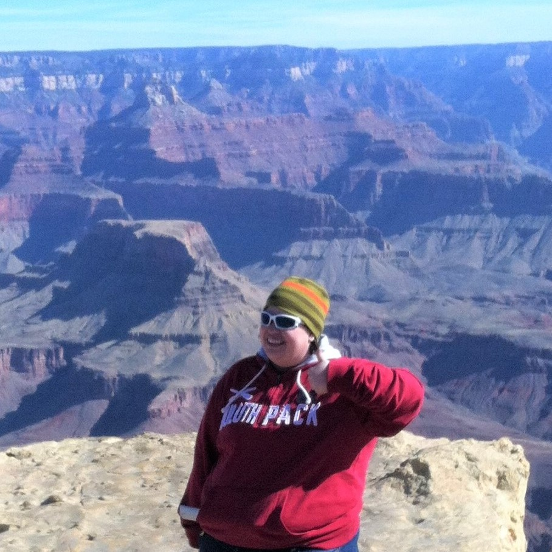
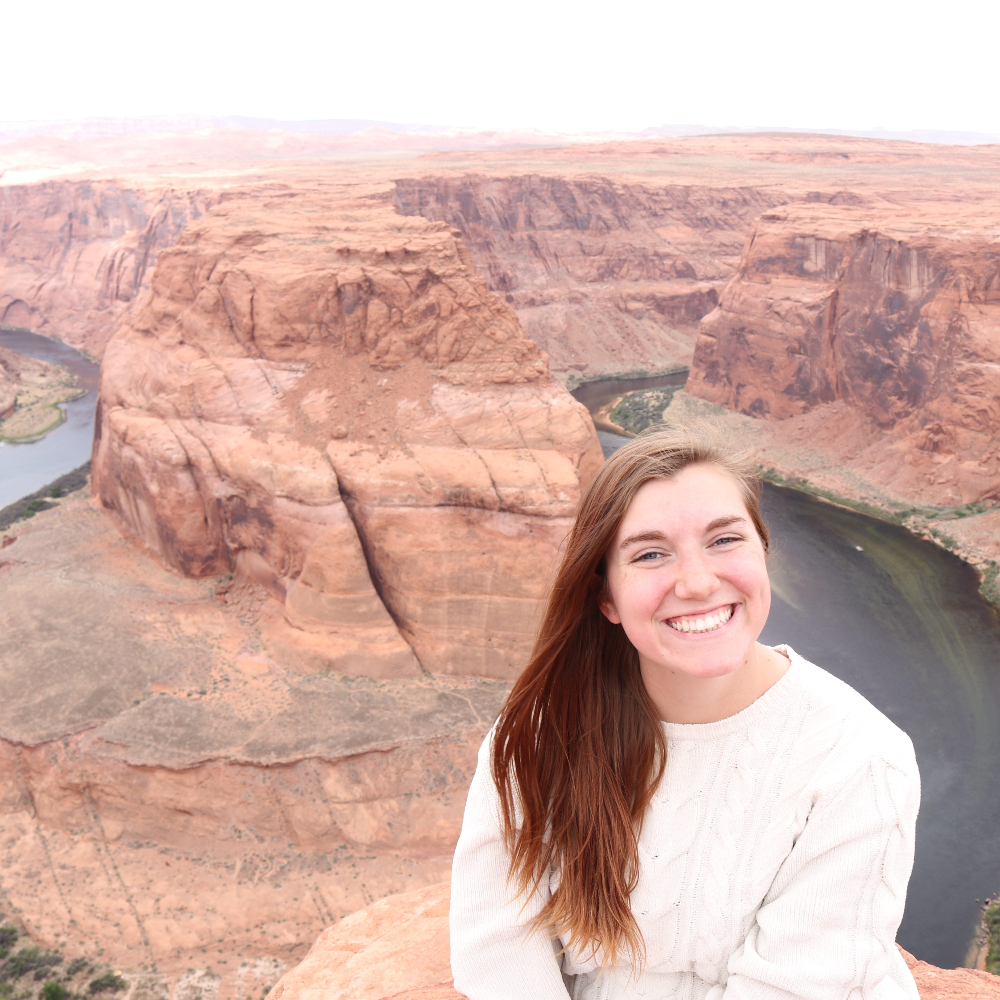
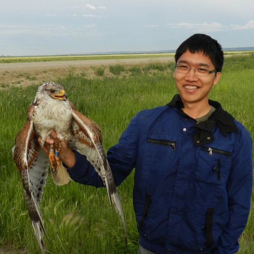

PI
Graduate Researchers
Undergraduate Researchers
Joseph Terrones
Morgan Appell
Technicians
Jeff Licht
Jose Villeda
Christine Vanginault
Avery Schoenherr
Hannah German
Garrison Garza
Visiting Scientists
Dinah Borus, PhD (International Potato Center, CGIAR, Kenya)
Dinah is visiting the lab as part of a USDA Borlaug
Fellowship. She will be studying climate impacts on potato physiology and
production.
Alumni

Lizz Waring (Postdoc; 2017-2019)
Lizz is currently a professor at Northeastern State University

Helen Scott (M.S. Biotechnology; 2018-2019)
Helen is currently working on a PhD at Boston University.

Ricky Kong (Visiting Scholar; 2019)
Ricky just recently completed his PhD at Western University.
Abigail Bell (UG; 2019-2020)
Abigail is now working in industry.
Dre Avizenis (UG; 2020-2021)
Mitej Dongarkar (UG; 2019-2020)
McKenna Whaley (UG; 2020)
Bryan Vasquez (UG; 2020)
Allen Owobu (UG; 2020)
Mohammed Uddin (UG; 2020)
Taylee Reyes (UG; 2020)
Bryn Rice (UG; 2019)
Leah Ortiz (UG; 2018 - 2019)
Angel Barron (UG; 2018 - 2019)
Zachary Bailey (UG; 2018 - 2019)
Amanda Pinal (UG; 2018)
Kobe Young (UG; 2018)
Dave Baychoo (UG; 2018)
Mahum Haque (UG; 2018)
Austin Cooper (UG; 2018)
Josh Gutierrez (UG; 2018)